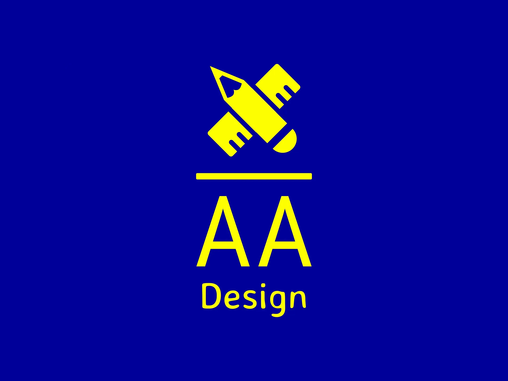

<!-- 
project: aaDesign
module: nav.html
author: andrew b. auxier
-->

<nav class="navbar">
    <!-- Logo -->
    <div class="logo-container">
        <a href="landing.html" class="logo">
            
        </a>
    </div>

    <!-- Title and Breadcrumbs -->
    <div class="navbar-left">
        <a href="landing.html" class="logo">
            <h1 class="navbar-title">Double A Design</h1>
        </a>
        <div class="breadcrumbs-container" aria-label="breadcrumb">
            <ol class="breadcrumb">
                <!-- Breadcrumbs here -->
            </ol>
        </div>
    </div>

    <!-- Navigation links -->
    <ul class="main-menu">
        <li><a class="translate nav-services hover-link hover-link:hover" href="services.html">サービス</a></li>
        <li><a class="translate nav-portfolio" href="portfolio.html">制作実績</a></li>
        <li><a class="translate nav-legal" href="legal.html">法務</a></li>
        <li><a class="translate nav-legal" href="contact.html">お問い合わせ</a></li>
    </ul>

    <!-- Widgets: Language and Mode Toggles -->
    <!--
    <div class="navbar-widgets">
        <select id="language-switcher" aria-label="Language Toggle Dropdown">
            <option value="jp">JP</option>
            <option value="en">EN</option>
        </select>
        
        <select id="mode-switcher" aria-label="Mode Toggle Dropdown">
            <option value="light">Light</option>
            <option value="dark">Dark</option>
        </select>
    </div> 
    -->

    <div>
        <a href="contact.html"><button class="translate nav-contact-button">Contact</button> </a>
    </div>
</nav>
<!-- 
<span class="banner-container">
    
</span> -->
